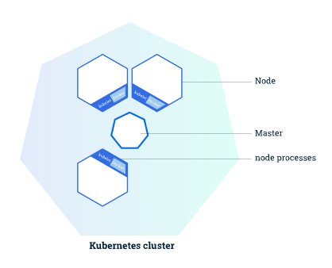
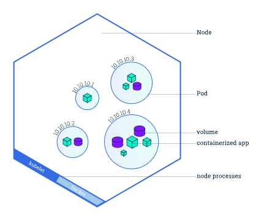
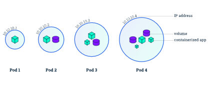
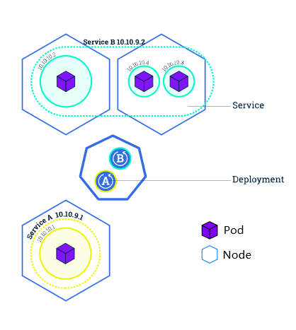
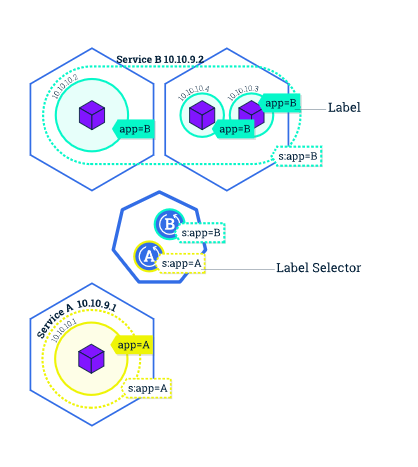

Kubernetes是什么
Kubernetes简称k8s，是一种容器编排工具，可以看作是docker-compose的强化版。
通过现代的 Web 服务，用户希望应用程序能够 24/7 全天候使用，开发人员希望每天可以多次发布部署新版本的应用程序。 容器化可以帮助软件包达成这些目标，使应用程序能够以简单快速的方式发布和更新，而无需停机。Kubernetes 帮助您确保这些容器化的应用程序在您想要的时间和地点运行，并帮助应用程序找到它们需要的资源和工具。
本文结构
- 按照k8s的系统层次：Cluster > Node > Pod介绍k8s的系统架构层次
- 按照k8s管理层次Service > < Deployments介绍k8s的容器管理方法
k8s系统架构层次
集群 Cluster
Kubernetes用于协调高度可用的计算机集群，这些计算机集群被连接作为单个单元工作。 Kubernetes 的抽象性允许您将容器化的应用程序部署到集群，而不必专门将其绑定到单个计算机。Kubernetes 负责在一个集群上自动分发和调度容器应用程序。一个典型的集群结构如下图：

其中：
- “Master”：负责管理集群。协调集群中的所有活动，例如调度应用程序、维护应用程序的所需状态、扩展应用程序和滚动更新；
- “Node”：集群中的工作机器，见下节介绍。
节点 Node
集群中的工作机器，可以是物理机或虚拟机，是应用程序容器的运行载体。每个Node上都可以运行多个容器，Node上的容器划分为一个个“Pods”（见下节介绍）。比如下图是一个典型的包含了多个Pod的Node的内部结构：

每个Node至少运行以下组件：
- Kubelet：负责Node与Master之间的通信，并管理机器上运行的Pod。
- 容器运行时(例如 Docker、rkt)：受Kubelet控制，负责从镜像仓库中拉取容器镜像，解包容器并运行应用程序。
应用程序实例 Pod
Pod模型可以理解为应用程序特定的“逻辑主机”，并且可以包含相对紧密耦合的不同应用程序容器。例如，Pod 可能包含带有 Node.js 应用程序的容器以及另一个要吸收 Node.js Web 服务器提供的数据的不同容器。Pod 中的容器共享 IP 地址和端口空间，始终位于同一位置并且统一调度，并在相同的节点上运行，共享上下文环境。如图所示是一些大小不同的Pod：

Pod是Kubernetes平台上原子级别的单元，每个Pod在Kubernetes中都有一个唯一的 IP 地址，且能从Pod外部进行访问的容器端口由用户明确指定。当我们在Kubernetes上创建一个部署(Deployment)时，该部署将在其中创建包含容器的 Pod（而不是直接创建容器）。
（其实就相当于一个docker-compose，用户指定expose端口）
k8s容器管理方法
部署 Deployment
Deployment负责创建和更新Node中的应用程序实例。创建Deployment后， Master会将Deployment创建的应用程序实例调度到集群中的各个Node。
创建应用程序实例后，Kubernetes 部署控制器会持续监视这些实例。如果托管它的节点不可用或删除，则部署控制器将替换实例。 这提供了一种解决机器故障或维护的自愈机制。
在“编排”诞生前的世界中，通常会使用安装脚本启动应用程序，但是它们并不能从机器故障中恢复。通过创建应用程序实例并使其运行在跨节点的机器之间，Kubernetes部署提供了截然不同的应用管理方法。
服务 Service
在逻辑上，Deployment是以Service为单位进行的。如图所示：

每个Service和每个Deployment一一对应，而一个Service可能包含多个Node中的多个Pods。
Kubernetes中的Service是一个抽象对象，它定义了一组逻辑的Pods和一个访问它们的策略，是允许Pod在Kubernetes中死亡和复制而不影响应用程序的抽象层。Service处理Pod之间的发现和路由(如应用程序中的前端和后端组件)，让互相依赖的Pod之间的耦合松动。
服务像所有Kubernetes对象一样，由YAML(首选)或JSON定义。针对服务的一组Pod在配置文件中通常由LabelSelector确定。虽然每个Pod都有一个唯一的IP地址，但是这些IP不会在没有服务的情况下公开在Cluster之外。服务允许您的应用程序接收流量。可以通过在配置文件中指定ServiceSpec类型以不同方式显示服务：
- ClusterIP(默认)：在集群中的内部IP上公开服务。此类型使服务只能从集群中访问
- NodePort：使用NAT在群集中每个选定的节点的同一端口上显示该服务。使用
:可以从群集外部访问服务。建立ClusterIP的超集 - LoadBalancer：在当前云中创建外部负载平衡器(如果支持)，并为服务分配固定的外部IP。建立NodePort的超集
- ExternalName：使用任意名称显示该服务(由规范中的externalName指定)，本过程通过使用该名称返回CNAME记录达成。无须使用代理。这种类型需要v1.7或更高版本的kube-dns
服务和标签
服务使用 标签和选择器，匹配一组 Pod，成为分组原语，此原语允许在 Kubernetes 中的对象进行逻辑运算。 标签是一对附加到对象的键/值对，可以以多种方式使用，方式如下:
- 指定用于开发、测试和生产的对象
- 嵌入版本标签
- 使用标签分类对象

k8s教程中出现的几个软件的简介
Kubernetes
一系列管理工具、API以及协议的集合
Minikube
k8s的一种实现，可以看作是一种集群管理的服务端
Kubectl
使用 Kubernetes API 与集群进行交互，可以看作是集群管理的客户端